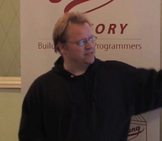

A GraphQL Implementation for Erlang
Jesper L. AndersenErlang Programmer, FP Geek
A GraphQL Implementation for Erlang
GraphQL is a Query Language for the web. Taking outset in some of the same ideas as SQL, the goal is to bring the same power to the Web in a fast, extensible and safe way. It moves many design decisions to the client-side, which improves productivity, but also defines a strict (typed) contract between the client and the server.
This talk presents a GraphQL framework for Erlang. This framework is usable over any transport you wish, but has mostly been used on top of the Cowboy web server. In the talk, we will focus on the items which are specific to an Erlang implementation and how the system is constructed. We will also focus on where the implementation diverges from the de-facto Node.js implementation, in order to better facilitate the model of Erlang.
Talk objectives:
- The talk has two goals: explain how a GraphQL backend might be useful to you. And explain how the backend works, so you have a better time at understanding its internals.
Target audience:
- Web backend developers, language geeks, people who build web APIs for a living or for fun.
About Jesper
GitHub:
jlouis
Twitter:
@jlouis666